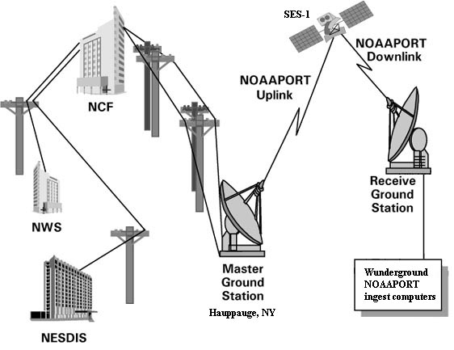

Звідки береться прогноз погоди?

*Data flow diagram of how weather data gets from the National Weather Service (NWS) and NOAA's Satellite
*Data flow diagram of how weather data gets from the National Weather Service (NWS) and NOAA's Satellite